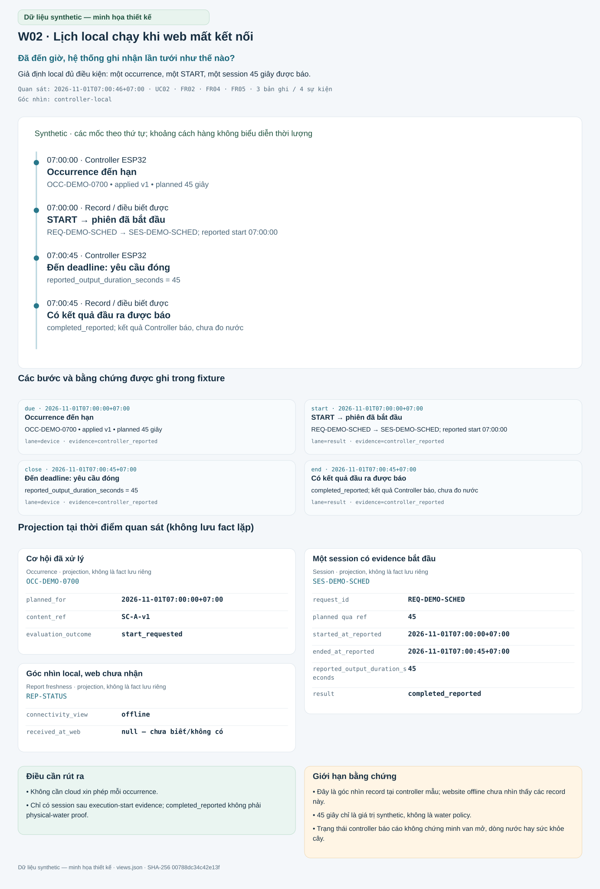
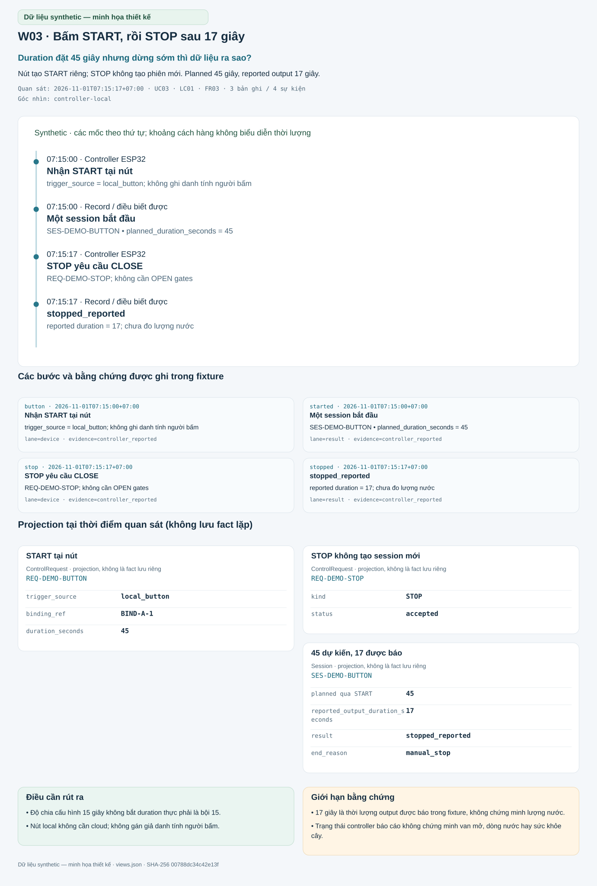
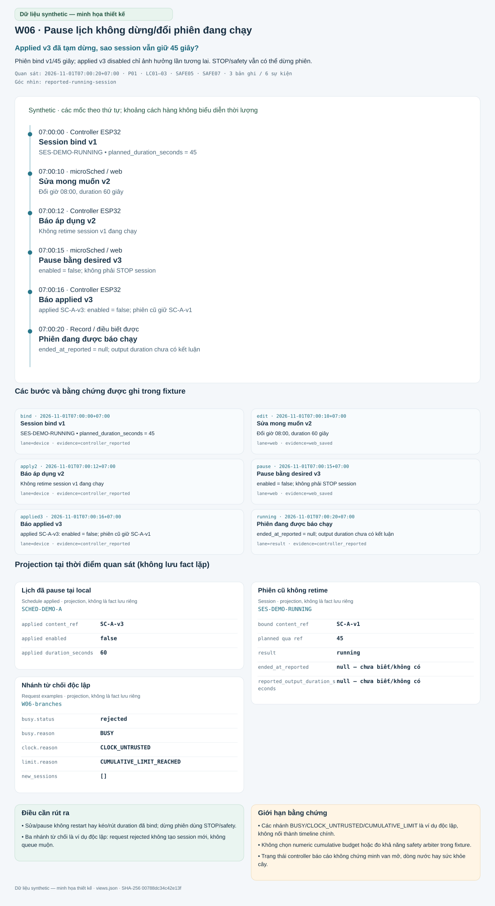

Khu vực
Area · projection, không là fact lưu riêng · AREA-DEMO-01
- name
Ban công mẫuNguồn
/catalog/areas/0/name
7 cảnh độc lập · walkthrough thiết kế
Đọc câu hỏi, theo dõi các mốc rồi đối chiếu từng bản ghi. Các cảnh là nhánh minh họa độc lập; không ghép thành một lần chạy thiết bị.
Trạng thái controller báo cáo không chứng minh van mở, dòng nước hay sức khỏe cây. Đây là artifact giải thích dữ liệu, không phải giao diện miGarden đã triển khai.
Một lần tưới tạo ra những đối tượng và dữ liệu nào?
Instance map sau một phiên local; ID mẫu liên kết xuyên lịch → occurrence → request → session.
8 bản ghi · 12 trường · 0 sự kiện

Area · projection, không là fact lưu riêng · AREA-DEMO-01
Ban công mẫu/catalog/areas/0/nameZone · projection, không là fact lưu riêng · ZONE-DEMO-A
AREA-DEMO-01/catalog/zones/0/area_idController · projection, không là fact lưu riêng · CTRL-DEMO-01
ESP32 mẫu/catalog/controllers/0/labelActuator · projection, không là fact lưu riêng · VALVE-DEMO-A
CTRL-DEMO-01/catalog/actuators/0/controller_idZONE-DEMO-A/catalog/actuators/0/zone_idSchedule · projection, không là fact lưu riêng · SCHED-DEMO-A
SC-A-v1/scenarios/W00/state/projections/schedule/last_known_applied/content_ref45/scenarios/W00/state/projections/schedule/last_known_applied/config/duration_secondsOccurrence · projection, không là fact lưu riêng · OCC-DEMO-0700
SC-A-v1/scenarios/W00/state/occurrences/0/content_refstart_requested/scenarios/W00/state/occurrences/0/evaluation_outcomeControlRequest · projection, không là fact lưu riêng · REQ-DEMO-SCHED
accepted/scenarios/W00/state/requests/0/statusSession · projection, không là fact lưu riêng · SES-DEMO-SCHED
completed_reported/scenarios/W00/state/sessions/0/result45/scenarios/W00/state/sessions/0/reported_output_duration_secondsTrạng thái controller báo cáo không chứng minh van mở, dòng nước hay sức khỏe cây.
Đã lưu v2 có nghĩa thiết bị dùng v2 chưa?
Cùng SCHED-DEMO-A: desired v2 lúc 08:00/60 giây, last-known applied v1 lúc 07:00/45 giây.
3 bản ghi · 12 trường · 3 sự kiện

07:00 • 45 giây; giữ cả nội dung và version
kind=event · evidence=controller_reported08:00 • 60 giây; không phải lịch active thứ hai
kind=change · evidence=web_savedoccurrences = []; requests = []; sessions = []
kind=event · evidence=synthetic_snapshotSchedule desired · projection, không là fact lưu riêng · SCHED-DEMO-A
SC-A-v2/scenarios/W01/state/projections/schedule/desired/content_ref08:00/scenarios/W01/state/projections/schedule/desired/config/recurrence/at_local_time60/scenarios/W01/state/projections/schedule/desired/config/duration_seconds2026-11-01T06:45:00+07:00/scenarios/W01/state/schedule/desired_saved_at_webSchedule supporting info · projection, không là fact lưu riêng · SCHED-DEMO-A
SC-A-v1/scenarios/W01/state/projections/schedule/last_known_applied/content_ref07:00/scenarios/W01/state/projections/schedule/last_known_applied/config/recurrence/at_local_time45/scenarios/W01/state/projections/schedule/last_known_applied/config/duration_seconds2026-11-01T06:40:00+07:00/scenarios/W01/state/projections/schedule/last_known_reported_atDerived observation · projection, không là fact lưu riêng · W01
pending/scenarios/W01/state/projections/schedule/application_status[]/scenarios/W01/state/occurrences[]/scenarios/W01/state/requests[]/scenarios/W01/state/sessionsTrạng thái controller báo cáo không chứng minh van mở, dòng nước hay sức khỏe cây.
Đã đến giờ, hệ thống ghi nhận lần tưới như thế nào?
Giả định local đủ điều kiện: một occurrence, một START, một session 45 giây được báo.
3 bản ghi · 11 trường · 4 sự kiện

OCC-DEMO-0700 • applied v1 • planned 45 giây
kind=event · evidence=controller_reportedREQ-DEMO-SCHED → SES-DEMO-SCHED; reported start 07:00:00
kind=action · evidence=controller_reportedreported_output_duration_seconds = 45
kind=action · evidence=controller_reportedcompleted_reported; kết quả Controller báo, chưa đo nước
kind=event · evidence=controller_reportedOccurrence · projection, không là fact lưu riêng · OCC-DEMO-0700
2026-11-01T07:00:00+07:00/scenarios/W02/state/occurrences/0/planned_forSC-A-v1/scenarios/W02/state/occurrences/0/content_refstart_requested/scenarios/W02/state/occurrences/0/evaluation_outcomeSession · projection, không là fact lưu riêng · SES-DEMO-SCHED
REQ-DEMO-SCHED/scenarios/W02/state/sessions/0/request_id45/scenarios/W02/state/projections/sessions/SES-DEMO-SCHED/planned_duration_seconds2026-11-01T07:00:00+07:00/scenarios/W02/state/projections/sessions/SES-DEMO-SCHED/started_at_reported2026-11-01T07:00:45+07:00/scenarios/W02/state/projections/sessions/SES-DEMO-SCHED/ended_at_reported45/scenarios/W02/state/sessions/0/reported_output_duration_secondscompleted_reported/scenarios/W02/state/sessions/0/resultReport freshness · projection, không là fact lưu riêng · REP-STATUS
offline/scenarios/W02/state/connectivity_viewnull — chưa biết/không có/scenarios/W02/state/projections/controller/received_at_webTrạng thái controller báo cáo không chứng minh van mở, dòng nước hay sức khỏe cây.
Duration đặt 45 giây nhưng dừng sớm thì dữ liệu ra sao?
Nút tạo START riêng; STOP không tạo phiên mới. Planned 45 giây, reported output 17 giây.
3 bản ghi · 9 trường · 4 sự kiện

trigger_source = local_button; không ghi danh tính người bấm
kind=action · evidence=controller_reportedSES-DEMO-BUTTON • planned_duration_seconds = 45
kind=event · evidence=controller_reportedREQ-DEMO-STOP; không cần OPEN gates
kind=action · evidence=controller_reportedreported duration = 17; chưa đo lượng nước
kind=event · evidence=controller_reportedControlRequest · projection, không là fact lưu riêng · REQ-DEMO-BUTTON
local_button/scenarios/W03/state/requests/0/trigger_sourceBIND-A-1/scenarios/W03/state/requests/0/binding_ref45/scenarios/W03/state/requests/0/duration_secondsControlRequest · projection, không là fact lưu riêng · REQ-DEMO-STOP
STOP/scenarios/W03/state/requests/1/kindaccepted/scenarios/W03/state/requests/1/statusSession · projection, không là fact lưu riêng · SES-DEMO-BUTTON
45/scenarios/W03/state/projections/sessions/SES-DEMO-BUTTON/planned_duration_seconds17/scenarios/W03/state/sessions/0/reported_output_duration_secondsstopped_reported/scenarios/W03/state/sessions/0/resultmanual_stop/scenarios/W03/state/sessions/0/end_reasonTrạng thái controller báo cáo không chứng minh van mở, dòng nước hay sức khỏe cây.
Có receipt có đồng nghĩa đã tưới không?
Request có receipt nhận/giao thực thi, thiếu start/terminal evidence: không tạo session đã tưới giả.
3 bản ghi · 11 trường · 4 sự kiện

ZONE-DEMO-A • duration 45 giây • cfg-demo-1
kind=action · evidence=web_savedREC-REMOTE-RX; chưa phải started
kind=event · evidence=controller_reportedexecution_authorized; không phải completed
kind=event · evidence=controller_reportedsessions = []; new_start_allowed = false
kind=alert · evidence=unknownControlRequest · projection, không là fact lưu riêng · REQ-DEMO-REMOTE
remote/scenarios/W04/state/requests/0/trigger_sourceoutcome_unknown/scenarios/W04/state/requests/0/status2026-11-01T07:00:30+07:00/scenarios/W04/state/requests/0/valid_untilTERMINAL_EVIDENCE_MISSING/scenarios/W04/state/requests/0/reasonEvidence state · projection, không là fact lưu riêng · W04
[]/scenarios/W04/state/sessionsunknown/scenarios/W04/state/dashboard_view/current_output_assessmentclosed/scenarios/W04/state/projections/controller/output_reported_state2026-11-01T06:59:45+07:00/scenarios/W04/state/projections/controller/time/atSafety view · projection, không là fact lưu riêng · W04
false/scenarios/W04/state/safety_view/new_start_allowed["OUTCOME_UNKNOWN"]/scenarios/W04/state/safety_view/block_reasonsnull — chưa biết/không có/scenarios/W04/state/dashboard_view/next_planned_atTrạng thái controller báo cáo không chứng minh van mở, dòng nước hay sức khỏe cây.
Hai lần nhận cùng record có tạo hai phiên không?
Record có event-time khác received-time; cùng REC-DEMO-END gửi lại vẫn chỉ một session lịch sử.
3 bản ghi · 10 trường · 4 sự kiện

REC-DEMO-END • occurred_at_reported = 07:00:45
kind=event · evidence=controller_reportedWeb bắt đầu nhận record cũ, không phát START mới
kind=recovery · evidence=web_receivedMột session SES-DEMO-SCHED trong history
kind=event · evidence=web_receivedduplicate_same_payload; không nhân phiên, không replay
kind=event · evidence=web_receivedExecutionRecord · projection, không là fact lưu riêng · REC-DEMO-END
REC-DEMO-END/scenarios/W05/state/records/6/record_id2026-11-01T07:00:45+07:00/scenarios/W05/state/records/6/time/atSES-DEMO-SCHED/scenarios/W05/state/records/6/subject_refIngest view · projection, không là fact lưu riêng · REC-DEMO-END
2026-11-01T07:10:02+07:00/scenarios/W05/state/ingest_view/deliveries/2/received_at_web2026-11-01T07:10:05+07:00/scenarios/W05/state/ingest_view/deliveries/3/received_at_webduplicate_same_payload/scenarios/W05/state/ingest_view/deliveries/3/disposition["SES-DEMO-SCHED"]/scenarios/W05/state/ingest_view/history_session_idsDerived view · projection, không là fact lưu riêng · W05
2026-11-01T07:00:00+07:00/scenarios/W05/state/dashboard_view/last_execution_at_reported2026-11-02T07:00:00+07:00/scenarios/W05/state/dashboard_view/next_planned_atEvent 07:00–07:00:45, nhận 07:10; không phải vừa tưới/scenarios/W05/state/dashboard_view/freshness_noteTrạng thái controller báo cáo không chứng minh van mở, dòng nước hay sức khỏe cây.
Applied v3 đã tạm dừng, sao session vẫn giữ 45 giây?
Phiên bind v1/45 giây; applied v3 disabled chỉ ảnh hưởng lần tương lai. STOP/safety vẫn có thể dừng phiên.
3 bản ghi · 13 trường · 6 sự kiện

SES-DEMO-RUNNING • planned_duration_seconds = 45
kind=action · evidence=controller_reportedĐổi giờ 08:00, duration 60 giây
kind=change · evidence=web_savedKhông retime session v1 đang chạy
kind=event · evidence=controller_reportedenabled = false; không phải STOP session
kind=change · evidence=web_savedapplied SC-A-v3: enabled = false; phiên cũ giữ SC-A-v1
kind=event · evidence=controller_reportedended_at_reported = null; output duration chưa có kết luận
kind=event · evidence=controller_reportedSchedule applied · projection, không là fact lưu riêng · SCHED-DEMO-A
SC-A-v3/scenarios/W06/state/projections/schedule/last_known_applied/content_reffalse/scenarios/W06/state/projections/schedule/applied_enabled60/scenarios/W06/state/projections/schedule/last_known_applied/config/duration_secondsSession · projection, không là fact lưu riêng · SES-DEMO-RUNNING
SC-A-v1/scenarios/W06/state/projections/sessions/SES-DEMO-RUNNING/content_ref45/scenarios/W06/state/projections/sessions/SES-DEMO-RUNNING/planned_duration_secondsrunning/scenarios/W06/state/sessions/0/resultnull — chưa biết/không có/scenarios/W06/state/projections/sessions/SES-DEMO-RUNNING/ended_at_reportednull — chưa biết/không có/scenarios/W06/state/sessions/0/reported_output_duration_secondsRequest examples · projection, không là fact lưu riêng · W06-branches
rejected/scenarios/W06/state/branches/busy/request/statusBUSY/scenarios/W06/state/branches/busy/request/reasonCLOCK_UNTRUSTED/scenarios/W06/state/branches/untrusted_clock/request/reasonCUMULATIVE_LIMIT_REACHED/scenarios/W06/state/branches/cumulative_limit/request/reason[]/scenarios/W06/state/branches/cumulative_limit/new_sessionsTrạng thái controller báo cáo không chứng minh van mở, dòng nước hay sức khỏe cây.